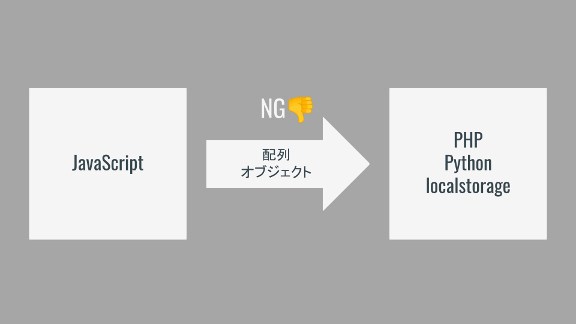
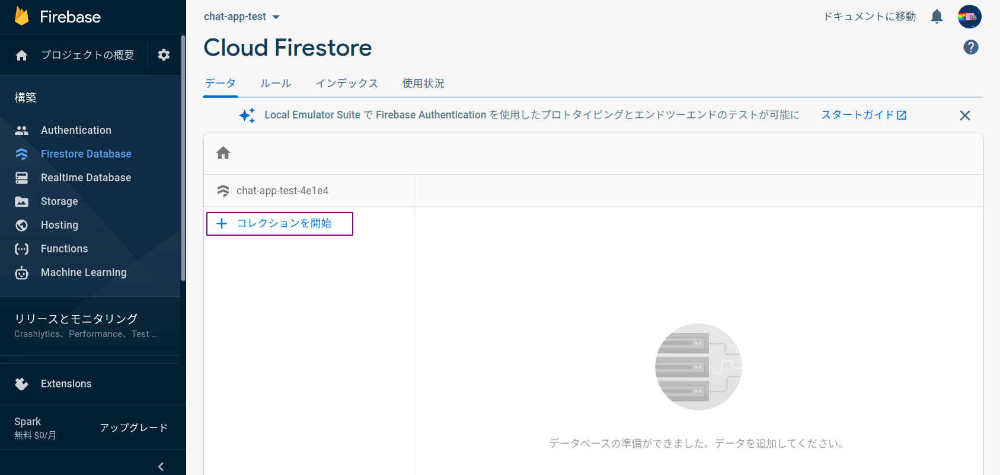
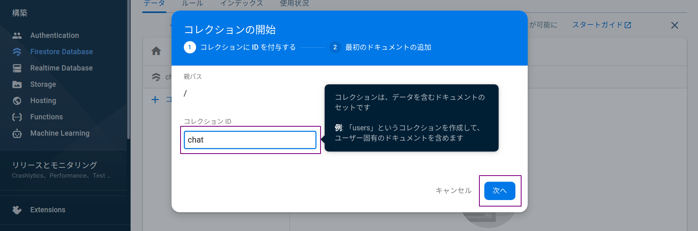
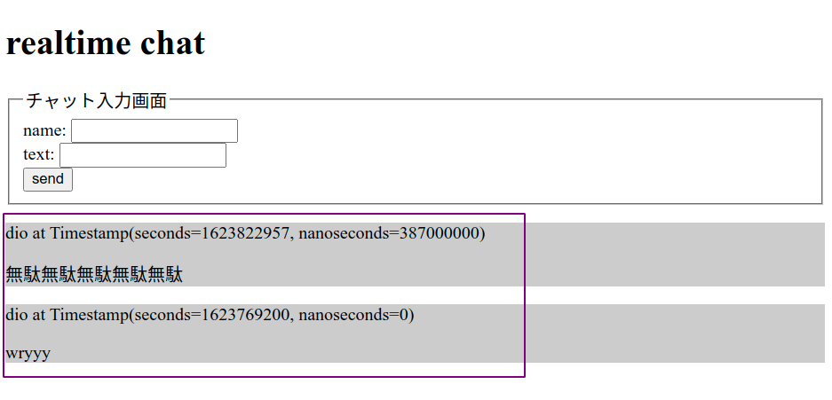

講義資料ノート
サンプルコードはこちら
受講時の注意
時間もお金も投資しているのだからむしり取れるだけむしり取れッ！
講義中に意識するポイント
ただ受けているだけだと資料の内容しかものにできずもったいない！
まず下記は絶対厳守！！！
- うまくいかないときに黙っている「サイレント詰み」は犯罪！
- まずはわからなくても「動くもの」をつくれ！
- 食糧飲料燃料の補給は各自のペースで！（自分にとって最適な状況を用意しろッ！）
いつでもコードを書けるように！
- 授業中は常にエディタを起動！
- 資料も常に開いておこう！
講義中はまず動くものをつくれ！
- 講義では一緒に1つのアプリケーションをつくる．
- わからなくてもとにかく「動かす」．
- 課題に挑戦すると大抵うまくいかない．そのときに「講義でつくった動くもの」と「自分でつくった動かないもの」を比較して何がマズイのか探るんだッ！
聴くときは聴き，書くときは書く！
- 初めて挑戦することなので，わからなくなって当然．．！
- まずはしっかり説明を聴こう！
- 聴くときは聴くこと，手を動かすときは手を動かすことに集中！！
クラスのメンバーでお互いに刺激し合おう！
- 考えたことや感じたことはslackの「ガヤチャンネル」でガンガン発信！
- くだらないことでもOK！！意見を言うやつは偉い！！
- 誰かのコメントに乗っかろう！
疑問を共有しよう！
- 質問はまずslackへ！
- 慣れないうちは「詰んだ」の一言から．詰みを表明することが大切！
- 慣れたら「エラーのスクショ」や「書いたコード」を貼ろう！
- 他の人の質問にも目を通そう！（同じ質問があるかも）
進捗を共有しよう！
- 演習時，できた人はスクショなどslackに貼ってアウトプット！
- できたら「できた」コメント！
- 詰んだら「詰んだ」コメント！
- みなさんのコメントを見ながら講義を進めていきます！
詰みを脱するTips
- まずは打ち間違いを疑おう！
()[]{}'";など
- 書いたら保存しよう！（よく忘れる！）
- Mac:
command + s - Windows:
ctrl + s
- Mac:
- 他の人に見てもらおう！
- 自分の打ち間違いは10分探しても見つからないが，他人の打ち間違いは2秒で見つかる．
- 「隣の人」「slack + スクショ」「zoomのブレイクアウト」を活用するのだッ！
コードに向き合いやすくなる考え方
彼を知り己を知らば百戦危うからず．
質問を制すものはコードを制す！
わからなかったり動かなかったりのときは遠慮なく質問せよ！
下記を記述するとお互いに幸せになれる確率が高まるッ！
- やりたいことは何か
- どういう状態（動き）になればゴールなのか
- どうやったか（考え方や書いたコードなど）
- どうなったか（エラーメッセージやスクショなど）
- 調べたときのググりワード，参考にしたサイトのURL
勿論最初から全部はできないので，まずは遠慮なく投稿するのが大事！
（足りない部分は講師チューターの方々が拾ってくれる）
言語化が大事！
- 「言語化」とは自分のやりたいことやうまくいかない現状を他の人に説明すること．
- 言語化は「できると良い」ではなく「できなければコードが書けない」のである．講師チューターは超能力者ではないので，みなさんが説明しなければ何をしたいのかわからないのだッ．．！
- コードを書くにも「JavaScriptで何を書けばよいのか」「どうなればOKなのか」を自ら決めて明確にすることが第一歩．
- 無理矢理にでも言葉にしたら誰かにぶつけよう．誰かと議論することでより解像度が高まる．最初は「ちょっと何いってるかわからない」と言われるが，やらないと言語化のスキルは高まらない．沈黙は死．
正解を求める思考を捨てよ！
- 「唯一の正解は存在しない」
- 提示されたヒントでは動かないこともあるし，それとは異なる方法でうまくいくこともある．
- 一つのやり方に固執することは地獄への一本道を進むことに似たり．
- 「効率のよいやり方」など一旦動かしてから改めて考えれば良い．力技だろうがまずは動けば良かろうなのだァァッ！！
「コードは量」という勝ちパターン！
- 一発でうまくいくことはほぼない．特にはじめの頃は経験値が少なく「運ゲー」度が高いので，何度もやり直してうまく行くパターンを引かなければならない．
- 運ゲーをものにするには試行回数が必要で，そのためには時間が必要になる．敵の行動パターンを集めながら会心の一撃が出るまで粘れ！
- わからなければ講義内容を10周くらいすれば何か見えてくるはず．わからないと嘆く時間があるならコードを書こう．レベルが足りないなら雑魚敵を狩って経験値を稼ごう．
課題にチャレンジするコツ
課題を制すものは全てを制す．
自分でネタを決めよ！
- 誰かに言われたものをつくっても面白くない．．．
- 自分で「何をつくりあげるのか」を決断してチャレンジすることが大切！
- 「自分で決めたことをやり遂げる」のが最高にCoolッ！
つくりたいものをつくれ！
- 「役に立つ」「ウケそう」ではない．．．
- 「自分がほしい物」「おもしろいと思うもの」にチャレンジすることで身が入る！
- 「誰かに褒められる感覚」よりも「全力でやりきった感覚」ッ！
まず見た目より動きをつくれ！
- プロダクトには「機能」「見た目」どちらも大事！
- 見た目を作り込むことでより「完成度の高いプロダクト」になる．
- しかしまずは「機能」や「動き」をつくる．「見た目」はその後ッ！
- 見た目を先につくると，機能を変更したときに作り直しになる．．．
技術自体を楽しめ！
- 技術は「アイデアを実現するためのツール」．
- しかし技術をより深く知ることで「できることのイメージが広がる」！
- 「好きな技術」「やってて楽しい技術」を見つけよう！まずは技術にのめり込もう！
JavaScript
JavaScriptの役割
| 言語 | 役割 |
|---|---|
| HTML（マスター済み） | コンテンツの指定 タイトル，文章，画像などの記述 |
| CSS（マスター済み） | コンテンツの装飾 色，大きさ，配置などの指定 |
| JavaScript | ユーザー操作，イベント発生による動きを実現 （わりとなんでもできる） |
JavaScriptとは
JavaScript ≠ JAVA
JavaScriptとJAVAの違い
| JavaScript | JAVA |
|---|---|
| フロントエンド言語 | サーバサイド言語 |
| カモミール | カモ |
| オーストラリア | オーストリア |
| ハムスター | ハム |
| メロンパン | メロン |
Webアプリケーションに欠かせないJavaScript

言語別人気ランキング（2020年）
| 言語 | 使用している開発者（%） |
|---|---|
| JavaScript | ||||||||||||||||||||||||||||||||||||||||||||||||||||||||||||||||||||||69.7% |
| HTML/CSS | ||||||||||||||||||||||||||||||||||||||||||||||||||||||||||||||62.4% |
| SQL | |||||||||||||||||||||||||||||||||||||||||||||||||||||||||56.9% |
| Python | ||||||||||||||||||||||||||||||||||||||||||41.6% |
| JAVA | ||||||||||||||||||||||||||||||||||||||38.4% |
| C# | ||||||||||||||||||||||||||||||||32.3% |
| TypeScript | ||||||||||||||||||||||||||||28.3% |
| PHP | ||||||||||||||||||||||||||25.8% |
JavaScript周辺の技術

よく使われる技術
| 技術 | 特徴 |
|---|---|
| - JavaScriptのライブラリ． - ユーザ操作イベントやアニメーションを実現 - ✅ 生JSと比較して短くかける． - ✅ webアプリケーションで広く普及している． - ✅ 導入が簡単． - ✅ 学習コストが低い． - 🔼 難しいことをやろうとすると複雑になる． - まずはここから！ | |
| - JavaScriptのライブラリ． - ✅ モダンなwebアプリケーション（SPA）を実現 - ✅ 高速！ - ✅ TypeScriptでの実装も可能 - ✅ スマホアプリも見据えた開発が可能． - 🔼 学習コスト - 🔼 環境構築がややハードル． - （私はReactが好き） | |
| - サーバサイドでJavaScriptを動かす技術． - ✅ フロントもサーバもJavaScriptで書ける．．！ - ✅ サーバサイドの中では環境構築が容易 - 🔼 難しいことをやろうとすると複雑になる． |
JavaScriptを書く
書き方
<script></script>の間に処理を記述！
書く場所
- htmlファイルの
</body>のすぐ上に書こう！ - ほかにもいくつか書ける場所があります．
- 別にファイルを作るやり方もあります．
まず動かす！！
alert()console.log()
文字列は「
'」か「"」で囲む．どちらでもOK！
<script>
alert('Hello world');
console.log('Hello world');
</script>
JS_おみくじ
本講義の内容とゴール
本講義の内容
- JavaScriptを動かす！
- 変数と条件分岐の練習と実装．
- おみくじアプリケーションの実装．
本講義のゴール
- プログラミングに慣れる！
- 「変数」「条件分岐」を扱う！
- 課題に取り組み始める！
JavaScript
JavaScriptの役割
| 言語 | 役割 |
|---|---|
| HTML（マスター済み） | コンテンツの指定 タイトル，文章，画像などの記述 |
| CSS（マスター済み） | コンテンツの装飾 色，大きさ，配置などの指定 |
| JavaScript | ユーザー操作，イベント発生による動きを実現 （わりとなんでもできる） |
JavaScriptとは
JavaScript ≠ JAVA
JavaScriptとJAVAの違い
| JavaScript | JAVA |
|---|---|
| フロントエンド言語 | サーバサイド言語 |
| カモミール | カモ |
| オーストラリア | オーストリア |
| ハムスター | ハム |
| メロンパン | メロン |
Webアプリケーションに欠かせないJavaScript
言語別人気ランキング（2020年）
| 言語 | 使用している開発者（%） |
|---|---|
| JavaScript | ||||||||||||||||||||||||||||||||||||||||||||||||||||||||||||||||||||||69.7% |
| HTML/CSS | ||||||||||||||||||||||||||||||||||||||||||||||||||||||||||||||62.4% |
| SQL | |||||||||||||||||||||||||||||||||||||||||||||||||||||||||56.9% |
| Python | ||||||||||||||||||||||||||||||||||||||||||41.6% |
| JAVA | ||||||||||||||||||||||||||||||||||||||38.4% |
| C# | ||||||||||||||||||||||||||||||||32.3% |
| TypeScript | ||||||||||||||||||||||||||||28.3% |
| PHP | ||||||||||||||||||||||||||25.8% |
JavaScript周辺の技術
よく使われる技術
| 技術 | 特徴 |
|---|---|
| - JavaScriptのライブラリ． - ユーザ操作イベントやアニメーションを実現 - ✅ 生JSと比較して短くかける． - ✅ webアプリケーションで広く普及している． - ✅ 導入が簡単． - ✅ 学習コストが低い． - 🔼 難しいことをやろうとすると複雑になる． - まずはここから！ | |
| - JavaScriptのライブラリ． - ✅ モダンなwebアプリケーション（SPA）を実現 - ✅ 高速！ - ✅ TypeScriptでの実装も可能 - ✅ スマホアプリも見据えた開発が可能． - 🔼 学習コスト - 🔼 環境構築がややハードル． - （私はReactが好き） | |
| - サーバサイドでJavaScriptを動かす技術． - ✅ フロントもサーバもJavaScriptで書ける．．！ - ✅ サーバサイドの中では環境構築が容易 - 🔼 難しいことをやろうとすると複雑になる． |
JavaScriptを書く
書き方
<script></script>の間に処理を記述！
書く場所
- htmlファイルの
</body>のすぐ上に書こう！ - ほかにもいくつか書ける場所があります．
- 別にファイルを作るやり方もあります．
まず動かす！！
alert()console.log()
文字列は「
'」か「"」で囲む．どちらでもOK！
<script>
alert('Hello world');
console.log('Hello world');
</script>
変数と計算
変数とは
「変数」は文字列や数値に名前をつけて，後から使用できるようにするもの．
プログラミングでは，ある部分で計算などして導出した値を別の部分で使用することが多い．
その際，毎回同じ計算を行うと不便であるため，1回計算した結果に名前をつけておき別の部分でそのまま使えるようにする．
💡 Key Point
変数には自分で名前をつけるが，「何の値なのか」がわかるように名前をつけることが極めて重要！！
変数のルール
プログラミングで使用する値には「数値」「文字列」などの型が存在する．
- 「数値」は数学で扱う数と同様に計算できる．
- 「文字列」は開発者が決めたメッセージやキーワードなどである．英語でも日本語でも扱うことができ，
'（シングルクォーテーション）か"（ダブルクオーテーション）で囲む必要がある． - 変数名の先頭が数字になるパターンはNG！
const number1 = 100;
const number2 = 200;
const text1 = 'hello';
const text2 = 'world';
const 3text = 'JavaScript'; // NG
💡 Key Point
シングルクォーテーションとダブルクオーテーションはどちらでも良いが統一しよう！
数値の計算
数値は数学と同様に四則演算を行うことができる．
const number1 = 1 + 9; // 10
const number2 = 1 - 5; // -4
const number3 = 2 * 4; // 8
const number4 = 10 / 2; // 5
const number5 = 10 % 3; // 1
文字列の結合
文字列は「+」の計算を行うことができる．この場合は数学と異なり，前後の文字列が連結される．
const number1 = 100;
const number2 = 200;
const text1 = 'hello';
const text2 = 'world';
const sum1 = number1 + number2; // 300
const sum2 = text1 + text2; // helloworld
💡 Key Point
1と'1'は異なるッ！
NGワード
変数名には使用できない単語が存在する
構文で使用するもの，将来的に使われるもの，など
- 「
if」「for」など
このような単語は「予約語」と呼ばれる．
- 「MDN javascript 予約語」で検索！！
- 引っかかる場合は少ないので今は気にしなくてOK！
練習
以下の処理をJavaScriptで実装しよう！
- 「
100」と「200」の数値をそれぞれ変数に入れ，加算した結果をalert()で表示． - 「
G's」と「ACADEMY」の文字列をそれぞれ変数に入れ，つなげてalert()で表示． js_practice.htmlに記述しよう！
動作確認
それぞれ「300」と「G'sACADEMY」が表示されればOK！
補足
JavaScriptにおける変数の定義には「
const」「let」「var」の3種類が存在する．基本的には
constを使用し，どうしてもな場合にletを使用すれば良いだろう．const hoge = 100; const hoge = 200; // エラー（同じ名前で定義するのはNG） hoge = 300; // エラー（異なる値を入れ直すのはNG） // 後から上書きできる変数 let fuga = 1000; let fuga = 2000; // エラー（同じ名前で定義するのはNG） foo = 3000; // OK（予期せぬ値が入ってしまう場合があるので注意） // むかしあったやつ（使わないほうが良い） var piyo = 99999; var piyo = 88888; // OK（あぶない） piyo = 77777; // OK（あぶない）
ランダムな数（乱数）をつくる
乱数とは
毎回異なる値が出てくる数のこと（例：1回目に実行したら1，2回目に実行したら4，など）．
JavaScriptには最初から乱数をつくれる処理が用意されている（Math.random()）のでこれを利用する．しかし，この処理は0から1の範囲で小数を発生させるため，Math.floor()を用いて整数に直す．
// 0から1の間でランダムな値（乱数）を表示．
const randomNumber1 = Math.random();
alert(randomNumber1);
// 0から4までのどれかが表示される！
const randomNumber2 = Math.floor(Math.random() * 5);
alert(randomNumber2);
💡 Key Point
乱数の処理は毎回これでいけるので，覚えるよりコピペ！
補足
JavaScriptのMath.~には多くの種類があり，絶対値を求めたり四捨五入したりする処理も存在する．
練習
math.htmlで以下の数をランダムに発生させてalert();で表示させよう！
| 最小値 | 最大値 | |
|---|---|---|
| 問題1 | 0 | 9 |
| 問題2 | 1 | 9 |
| 問題3 | 5 | 10 |
| 問題4 | 50 | 99 |
条件分岐
条件分岐
条件を満たすときと満たさないときで別々の処理を実行する！
if(`条件式`){
// 条件式を満たす場合の処理
} else {
// 条件式を満たさない場合の処理
}
複数の条件で処理を分岐させることもできる！
if(`条件式1`){
// 条件式1を満たす場合の処理
} else if(`条件式2`) {
// 条件式1と満たさなくて条件式2を満たす場合の処理
} else {
// いずれの条件も満たさない場合の処理
}
条件式
条件式は左辺と右辺の比較で行うことが多い（比較演算子）．
| 演算子 | 意味 | 補足 |
|---|---|---|
== | 左辺と右辺が等しい | 1と'1'は等しいと判定される． |
=== | 左辺と右辺が等しい | 1と'1'は等しくないと判定される． |
!= | 左辺と右辺が等しくない | 1と'1'は等しいと判定される． |
!== | 左辺と右辺が等しくない | 1と'1'は等しくないと判定される． |
> | 左辺が右辺より大きい | |
< | 左辺が右辺より小さい | |
>= | 左辺が右辺以上 | |
<= | 左辺が右辺以下 |
💡 Key Point
左辺と右辺が等しい場合に
a = bのように記述してハマる．a == bが正解．
条件式の組み合わせ
条件式は複数組み合わせることができる．下記2種類がよく使われる．
- 複数の条件式を全て満たす場合（AND条件）は条件式を
&&でつなぐ． - 複数の条件式のいずれかを満たす場合（OR条件）は条件式を
||でつなぐ．
if(`条件式1` && `条件式2`){
// 条件式1と条件式2を両方満たす場合の処理
} else {
// 片方しか満たさない，両方満たさない場合の処理
}
if(`条件式1` || `条件式2`){
// 条件式1か条件式2のどちらかを満たす場合の処理
} else {
// 両方満たさない場合の処理
}
💡 Key Point
条件分岐を書くときははじめに構文（
if(){}else{}）をつくってから条件や処理を書く！
練習
乱数と条件分岐を組み合わせておみくじを実装！
ランダムに「大吉・中吉・小吉・凶・大凶」をalert()で表示！
omikuji01.htmlに記述しよう！
ヒント！！
Math.rondom()で0から4を発生させる．（<- 前項でつくったものが使える．．！）- 出た数値に応じて
if文を使って条件分岐し，異なる内容をalert()で出力！
毎回ランダムで「大吉・中吉・小吉・凶・大凶」のどれかが表示されればOK！
おみくじのWebアプリ実装
おみくじの処理自体はできたが，画面から操作できるWebアプリケーションにしたい！
想定される挙動
- 画面上のHTML要素（DOM）をクリックして処理を実行！
- 要素を「指定」する！
- classやidでDOMを特定する．
- 指定したDOMに対してJavaScriptで操作を行う！
例
- 「
idがbutton」の要素を「クリック」したら．．． - 「大吉-大凶のどれかをランダムに表示」！
参考（DOM）
HTMLに記述されている各要素のこと（document object model）
基本の3要素
- selector（どこを）
- event（いつ）
- method（どうする）

なんだけど．．．
＿人人人人人人人人人人人人人人＿
＞ JavaScriptはDOM操作が苦手 ＜
￣Y^Y^Y^Y^Y^Y^Y^Y^Y^Y^Y^Y^Y^Y^￣
jQueryライブラリ
jQueryとは
- セレクタをcssと同じ要領で指定できる．
- 素のJavaScriptよりも短く書ける！
- アニメーションなど手軽に設定できる．
- 書き方（順序や考え方）はJavaScriptと同様！
- 導入が簡単（フレームワークなどは環境構築で詰む）
【参考】https://webkikaku.co.jp/homepage/blog/hpseisaku/webdesign/jquery_start/
💡 Key Point
jQueryはJavaScriptのDOM操作を短縮して書けるライブラリ
補足
ライブラリは他の開発者がつくったコードを利用させてもらうイメージ．手間のかかる処理を一発で書けるように実装してくれている．
ライブラリ読み込み
（jQueryに限らず）ライブラリはソースコードの読み込みが必要！！
（読み込みのコードは毎回同じなのでコピペでOK！）
<!-- 🔽 ここで読み込み 🔽 -->
<script src="https://ajax.googleapis.com/ajax/libs/jquery/3.6.0/jquery.min.js"></script>
<script>
// 自分で書いた処理
</script>
💡 Key Point
ライブラリを使用する場合は「自分で書くJavaScriptより上の行で」読み込むこと．ライブラリで決められた関数を実行しようとして，読み込みが終わっていない状態だとエラーになってしまう．
jQueryの書き方と動き方
基本の考え方はJavaScriptと全く同じッ！
コード例
idがbuttonの要素を- クリックしたときに
- アラートを出す
$('#button').on('click', function () {
alert('Hello World!');
});
コード内でそれぞれ以下の場所で指定している．
$(`セレクタ名`).on(`イベント名`, function () {
`実行したい処理（メソッド）`
});
今回はidで指定しているが，セレクタの指定方法はたくさんある．イベントもたくさんある．
- 「
jQuery セレクタ」でググる！ - 「
jQuery イベント」でググる！
まずは形の入力に慣れよう！
いろいろな処理を書く前に，形の入力に慣れることが大事！！（慣れないとしょうもないスペルミスで時間溶かす）
$('#id').on('click', function () {
// ...
});
喋りながら書くと定着する（本当）
だらーあいでぃーおんくりっくふぁんくしょんかっこかっこなみかっこえんたー...
練習
おみくじアプリケーションを完成させよう！
仕様
- 「おみくじを引くボタン」をクリックしたら以下のどれかを画面に表示！
- 「大吉・中吉・小吉・凶・大凶」
ヒント
下記の流れで考えよう！
- ボタンをクリックしたらなにかする．
- ランダムな数値を発生させる．
- 条件分岐をつくって，対応する「大吉，中吉，...」を画面に表示させる．
$('#button').on('click', function () {
// 0から4でランダムな数を作成
// 0だったら大吉，1だったら中吉．．．
// 結果をidで指定した場所に表示
});
課題
じゃんけんアプリを実装！！！！！
じゃんけんアプリの仕様
- 「グー」「チョキ」「パー」のボタンを設置
- どれかをクリックしたら「コンピュータの出した手は？」を変更
- 「コンピュータ：グー」「コンピュータ：チョキ」など
- 「結果は？」の箇所に
- 「あなたの負け」「あなたの勝ち」「あいこ」のどれかを表示！
※上記を最低ラインとして製作
※これを土台にしてガンガン発展させよう！！
課題に対する考え方
| ✅ | ❎ |
|---|---|
| オリジナリティを表現する | 誰かに言われたものを作る |
| プロダクトを創る | プログラムを書く |
| 自分が好きなものをつくる | 受けが良さそうなものをつくる |
JS_メモパッド
本講義の内容とゴール
本講義の内容
- 配列や繰り返し処理に触れる．
- ブラウザにデータを保存する．
- 複数件のデータをまとめる処理を実装する．
本講義のゴール
- いろいろなデータ形式を知る！
- データの扱いになれる！
- データを保存・読み出しをマスターする！
配列
配列（array）とは
- 複数の値に順番をつけてまとめて扱う方法．奥が深い．超強い．
- 順番を「インデックス」と呼ぶ．「0」からスタート！
- プログラミングでは「数字は0から始める」（稀に例外もあり）
const array = ['大吉', '中吉', '小吉', '凶', '大凶'];
alert(array[0]);
配列の作り方
下記のどちらかで作成可能．どちらでも良い（1が多い）．
[]で囲い，要素をカンマで区切る．new Array()の()内に要素をカンマ区切りで入れる．
const list01 = ['月', '火', '水', '木', '金', '土', '日'];
const list02 = new Array('月', '火', '水', '木', '金', '土', '日");
console.log(list01);
💡 Key Point
配列はブラウザの検証画面に出力すると構造や内容が確認しやすい．
配列の長さ
配列の要素数を「長さ」と呼ぶ．長さは配列名.lengthで取得することができる．
繰り返し処理などで非常に有用である（後述）．
console.log(list01.length); // 7
配列のいいぞ．．．
条件分岐なんていらんかったんや．．．
const hands = ['グー', 'チョキ', 'パー'];
const randomNumber = Math.floor(Math.random() * hands.length);
const computerHand = hands[randomNumber];
console.log(computerHand);
結果のテーブルをつくるのもありやな．．．
const resultTable = [
['draw', 'win', 'lose'],
['lose', 'draw', 'win'],
['win', 'lose', 'draw'],
];
const userHand = 0;
const computerHand = 1;
const result = resultTable[userHand][computerHand];
console.log(result);
よくある配列の処理
配列には値を追加したり削除したりできる．
const list01 = [1, 2, 3, 4, 5, 6, 7, 8, 9, 10];
// 先頭に追加
list01.unshift(0); // [0, 1, 2, 3, 4, 5, 6, 7, 8, 9, 10]
// 末尾に追加
list01.push(11); // [0, 1, 2, 3, 4, 5, 6, 7, 8, 9, 10, 11]
// 先頭を削除
list01.shift(); // [1, 2, 3, 4, 5, 6, 7, 8, 9, 10, 11]
// 末尾を削除
list01.pop(); // [1, 2, 3, 4, 5, 6, 7, 8, 9, 10]
// 反転
list01.reverse(); // [10, 9, 8, 7, 6, 5, 4, 3, 2, 1]
繰り返し処理
繰り返し処理とは
同じ処理を指定した回数実行するやり方
- 同じ処理を100回実行したいときに100回書くのか．．？
- 配列と相性が良い！
- 超むずい（使っていてもきちんと説明できないことも．．．）
書き方
繰り返し処理では次の3つの条件を指定する．
- 開始条件
- 繰り返しを続ける条件
- 回数のカウントの仕方
for(`開始条件`; `繰り返しを続ける条件`; `回数のカウントの仕方`){
// 実際に繰り返したい処理
}
💡 Key Point
if文と同じく，まず構文の形をつくってしまおう．
コード例
- 「
i」の値を使って繰り返しをコントロールする． - 条件をセミコロン「
;」で区切る点に注意！！ i++は「iを1ずつ増やす」を意味する．- 「
i=0で{}内を実行」「i=1で{}内を実行」...の繰り返し．
for(let i=0; i < 100; i++){
console.log(i);
}
上のコードは以下と同じ意味．「i < 100」なので99まで実行したら終了．
console.log(0);
console.log(1);
console.log(2);
// ...
console.log(98);
console.log(99);
繰り返しの使用例
1901年から2021年を選択できる<select>を作成する．処理の流れは以下．
- 開始年と終了年を定義しておく．
- 出力用の空文字を用意しておく．
- 繰り返し処理で「開始条件に開始年」「終了条件に終了年」を指定してタグを作成し，空文字に追加する．
- 繰り返し処理が終わったら指定した場所に出力する．
// 1
const start = 1901;
const end = 2021;
// 2
let option = '';
// 3
for(let i = start; i <= end; i++){
option += '<option>' + i + '</option>';
}
// 4
$('#hoge').html(option);
繰り返し処理との組み合わせ
繰り返し処理を用いると配列内の要素を順番に使うことができる．lengthを使用すると配列の長さに関わらず対応できる．
const list01 = ['月', '火', '水', '木', '金', '土', '日'];
for(let i = 0; i < list01.length; i++){
console.log(list01[i]);
}
配列と繰り返しでブラウザに要素を表示
よく出てくるパターン．データが入った配列からデータを取り出して画面に表示したい場面は多い．
流れは以下のとおり．
- 空の出力用配列を用意しておく．
- 繰り返し処理を用いて，配列からデータを取り出し，タグに入れて1の配列に追加する．
- 繰り返し処理が終わったら出力用の配列を画面上の指定した部分に出力する．
const list01 = ['月', '火', '水', '木', '金', '土', '日'];
// 1
const array = [];
// 2
for(let i = 0; i < list01.length; i++){
array.push('<p>' + list01[i] + '</p>');
}
// 3
$('#echo').html(array);
繰り返し処理のバリエーション
似たような構文がいくつか存在する．とりあえず好きなものを使用すればOK．
const list = [1, 2, 3, 4, 5];
for (let i = 0; i < list.length; i++) {
console.log(list[i]);
}
for (let x of list) {
console.log(x);
}
list.forEach(function (x) {
console.log(x);
})
オブジェクト
オブジェクトとは
- 配列と同様に複数の値を管理する方法
- 配列の「インデックス」に対して「キー」「バリュー」で管理．
const jojo01 = {
number: 1,
title: 'ファントムブラッド',
hero: 'ジョナサン・ジョースター',
rival: 'ディオ・ブランドー',
sound: 'メメタァ',
};
console.log(jojo01.sound);
console.log(jojo01['sound']);
配列とオブジェクトの組み合わせ
この形は非常に多い．今後もたくさん出てくるので慣れておくことを推奨するッ！！
const jojo = [
{
number: 1,
title: 'ファントムブラッド',
hero: 'ジョナサン・ジョースター',
},
{
number: 2,
title: '戦闘潮流',
hero: 'ジョセフ・ジョースター',
},
{
number: 3,
title: 'スターダストクルセイダース',
hero: '空条承太郎',
},
];
console.log(jojo[0].title); // ファントムブラッド
console.log(jojo[2].hero); // 空条承太郎
練習
配列の練習
list/array.html
オブジェクトの練習
list/object.html
上記が楽勝な人
list/challenge.html
LocalStorage（メモ帳初級）
LocalStorageとは
変数やオブジェクトの問題
- ブラウザをリロードすると初期化される．
- 次回読み込んだときまで値を保存したいときにつらい！
LocalStorageができること
- ブラウザにデータを保存できる！
- テキスト形式のデータのみ．
- 「オリジン単位」ごとに5MBまで保存できる．
- （自分で削除しないと永続的に保存される）
オリジン単位とは「http://www.example.com:80」のような「プロトコル://ドメイン名:ポート番号」のこと．
参考: https://gihyo.jp/dev/serial/01/javascript-security/0004?page=2
本日実装するアプリケーション
メモ帳をつくろう！
- ブラウザ上のテキストエリアにメモを入力．
- ブラウザに情報を保存．
- リロードしても情報が保存されるようにする．
仕様
- saveボタンをクリックしたら情報を保存．
- clearボタンをクリックしたら情報を削除．
- リロード時に情報が保存されていれば自動的に表示．
完成イメージ
LocalStorageの内容は検証画面から確認できる．
「Application」 -> 「LocalStorage」の順にクリックすると確認できる（下図の赤枠部分）．

LocalStorageの使い方
しくみ
「key」と「value」の形式でデータを保存する．key名を変えれば複数保存できるッ！
| key | value |
|---|---|
| memo01 | コード！書かずにはいられないッ！ |
| memo02 | 最終的に．．．動けばよかろうなのだァァァァッ！！ |
| memo03 | 過程や！方法なぞ！どうでもよいのだァーッ |
JavaScriptでの扱い方
今回はデータの登録（すでに同じkeyが存在する場合は上書き）とデータの取得を扱う．
| 内容 | JavaScriptの書き方 |
|---|---|
| データ登録 | localStorage.setItem(key, value); |
| データ取得 | localStorage.getItem(key); |
| データ更新 | localStorage.setItem(key, value); |
| データ削除 | localStorage.removeItem(key); |
| データ全削除 | localStorage.clear(); |
| データの長さ | localStorage.length; |
| データの順番 | localStorage.key(インデックス); |
メモ帳に必要な処理
1. データを保存するときの処理
- saveボタンのクリックでイベント発火．
- テキストエリアの情報を取得．
- LocalStorageに情報を保存．
2. データを削除するときの処理
- clearボタンクリックでイベント発火．
- LocalStorageの情報を消去．
- 画面上の入力欄をクリア．
3. データを取得するときの処理
- 読み込み時にLocalStorageのデータ有無を確認．
- 保存されていれば情報を取得．
- テキストエリアに情報を表示．
データを保存するときの処理
- saveボタンのクリックでイベント発火．
.val()でテキストエリアの情報を取得．localStorage.setItem()でLocalStorageに情報を保存．
// memo01.html
$('#save').on('click', function () {
const text = $('#text_area').val();
localStorage.setItem('memo', text);
});
💡 Key Point
「localStorage」は手打ちせず補完に頼る！！
データを削除するときの処理
- clearボタンクリックでイベント発火．
- key名を指定してLocalStorageの情報を消去．
- 画面上の入力欄をクリア（空文字で上書きする）．
// memo01.html
$('#clear').on('click', function () {
localStorage.removeItem('memo');
$('#text_area').val('');
});
「
.val()」は()内に何か入れると入れた値で上書きする！
データを取得するときの処理
- 読み込み時に条件分岐を用いてLocalStorageのデータ有無を確認．
- 保存されていれば情報を取得．
- テキストエリアに情報を表示．
// memo01.html
if (localStorage.getItem('memo')) {
const text = localStorage.getItem('memo');
$('#text_area').val(text);
}
データがないのに処理しようとするとエラーになってしまう．データがないときは何もしない．
練習
memo01.htmlに以下の処理を順番に実装しよう．
- saveボタンクリック時にデータの保存
- clearボタンクリック時にデータの消去
- 読み込み時にデータの取得
LocalStorageの中身は検証画面から確認しよう．それぞれ以下の状態になればOK！
- 保存時にデータが保存され，検証画面から確認できる．
- 消去時に保存してあるデータが消去される．
- リロード時に保存しているデータがあれば画面に表示される．
JSONデータ（メモ帳中級）
メモ帳初級の問題点
データが1件しか保存できない．複数のメモを個別に残しておきたいときに困る．
複数件のデータを管理する
配列かオブジェクトを使えば複数件のデータをまとめることができる．これを用いればメモ欄が複数になっても管理できそうである．
だめです
配列やオブジェクトは言語毎に形式が異なるため互換性がない（JavaScriptの配列はJavaScriptでしか扱えない）．
つまり，LocalStorageも配列やオブジェクトを保存することはできない．

互換性のあるデータであるJSON形式
Webアプリケーションは複数の言語で構成されていることが多い．このような場合にお互いのデータをやり取りするため，互換性のある「JSON形式」が準備されている．
各言語では「自前の配列やオブジェクト」と「JSON形式のデータ」を相互に変換する処理が準備されている．

メモ帳中級編のイメージ
タイトルと本文をまとめて保存できるようにする！

JSONの扱い方
JavaScriptには（他の言語でも）「配列やオブジェクトをJSONに変換する処理」と「JSONを配列やオブジェクトに戻す処理」が用意されている．
配列やオブジェクトをJSONに変換する処理
JSON.stringify()でJSON形式に変換できる．
const data = {
title: '波紋の使い方',
text: 'メメタァ'
};
const jsonData = JSON.stringify(data);
localStorage.setItem('memo', jsonData);
JSONを配列やオブジェクトに戻す処理
JSON.parse()でJSON形式から戻すことができる．
const jsonData = localStorage.getItem('memo');
const data = JSON.parse(jsonData);
console.log(data)
練習
タイトルと本文の両方を保存できるメモ帳を実装しよう．
- 動き方はメモ帳初級編と同様
- saveボタンクリック時に
- タイトルと本文の値を取得してまとめる．
- まとめたデータをJSON形式に変換する．
- JSON形式のデータをLocalStorageに保存．
- clearボタンクリック時にデータを消去
- 読み込み時に
- LocalStorageからJSON形式のデータを取得する．
- JSON形式のデータをオブジェクトに戻す．
- オブジェクトからデータを取り出して画面に表示する．
課題
LocalStorageを使った何かを作ろう
- タブで複数記述できるメモ帳
- じゃんけんのスコア保存
- ゲームのセーブ&ロード機能
- 保存したデータをグラフ表示
大事なのは「データを保存できる」「データを読み出せる」の2点！
これを用いて何ができるか考えるのだッ！！
JS_Firebase
事前準備
今回はGoogleのアカウントを使用します！
無料で取得できますので，事前に作成しておいてください！
- すでにお持ちの方は既存のアカウントでOKです！
本講義の内容とゴール
本講義の内容
- 関数を定義し，動かす一連の動作を実装する．
- オンライン上のデータベースにデータを保存する．
- オンライン上のデータを取得し，画面上にリアルタイムに表示する．
本講義のゴール
- 関数を使って処理を実装できるようになる！
- オンライン&リアルタイムでデータ共有する！
- 複雑なデータを扱う場合にどう考えるかを把握する！
関数
関数（function）とは
- 関数とは記述した処理をまとめて名前をつけて使い回せるようにしたもの．
- 一度処理を定義してしまえば，呼び出すだけで実行可能！
例
- 関数には「定義」と「実行」が必要．
- 関数には必ず名前をつける．
{}内に実行してほしい処理を記述する．- 「実行」したいときは名前を呼び出す．
// 関数の定義
function test(){
console.log('関数は便利！');
}
// 関数の実行
test();
引数と戻り値
関数は「なにかを入力して」「処理した結果を出力する」動きが基本となる．
引数
引数とは「関数に入力する値」である．
- 定義した関数に対して，処理に必要な値を入力する．
- 引数の数は一つでも複数でもOK！
戻り値
戻り値とは「関数から出力されてくる値」である．
- 関数の中で計算などを実行した後，結果を返す処理．
- 関数内の変数，配列，オブジェクトなどで返せる．
例
aとbの2つの数を入力し，「加算した結果」を出力する関数を考える．
この場合，aとbが「引数」でtotalが戻り値となる．
// 関数の定義
function add(a, b){
const total = a + b;
return total;
}
// 関数の実行
const sum = add(10, 20);
console.log(sum); // 30
数学の関数と同じ
プログラミングの関数は理解が難しいものの一つであるが，数学の関数と同じイメージを持つと理解しやすい．
数学の関数
数学の関数は「何かの数値を入力」すると「決まった計算を実行した結果を出力」するものである．
例えば，f(x) = x^2 + 2x + 1と関数を定義すると．．．
f(2) = 9,f(5) = 36,f(10) = 121
となる．この場合，入力値・関数・出力値をまとめると以下のようになる．
| 入力値 | 関数 | 出力値 |
|---|---|---|
| 2 | f(x) = x^2 + 2x + 1 | 9 |
| 5 | f(x) = x^2 + 2x + 1 | 36 |
| 10 | f(x) = x^2 + 2x + 1 | 121 |
プログラミングの関数
上記の例をJavaScriptで書くと以下のようになる．
function calculate(x) {
const result = x * x + 2 * x + 1;
return result;
}
calculate(2); // 9
calculate(5); // 36
calculate(10); // 121
この場合も「記述の仕方が異なるだけでやっていることは同じ」である．
| 入力値 | 関数 | 出力値 |
|---|---|---|
| 2 | calculate(x) | 9 |
| 5 | calculate(x) | 36 |
| 10 | calculate(x) | 121 |
💡 Key Point
引数と戻り値がない場合もある（ややこしいポイント）
言語にはじめから用意されている関数
これまでに使用した乱数関連も関数であるが，これらはJavaScriptがはじめから用意している関数である．
このような関数を「ビルドイン関数」と呼ぶ．
対して，開発者が自ら定義した関数を「ユーザ定義関数」と呼ぶ．
| 引数 | 関数 | 戻り値 |
|---|---|---|
| なし | Math.random(); | 0.534714863872 |
| 3.1415926535 | Math.floor(3.1415926535); | 3 |
Math.random(); // 0.534714863872
// 引数： なし
// 戻り値： 0.534714863872
Math.floor(3.1415926535); // 3
// 引数： 3.1415926535
// 戻り値： 3
【参考】関数の記述方法
JavaScriptにおける関数の定義は以下の3種類を用いることができる．どの方法で記述しても実行方法は同じ．
（現段階では）どれでも同様と考えてOK．
function add1(a, b){
return a + b;
}
const add2 = function(a, b){
return a + b;
}
const add3 = (a, b) => {
return a + b;
}
// 全部同じという理解でOK！
const result1 = add1(10, 20);
const result2 = add2(10, 20);
const result3 = add3(10, 20);
関数の利用
関数の利点
イベントごとに毎回同じ処理を書くのは面倒！
関数を定義しておけば，ボタン押したら実行するだけ！
例
押したボタンに応じて，異なる範囲の乱数を発生させたい！
// 関数の定義
function generateRandomNumber(min, max){
const rand = Math.floor(Math.random() * (max - min + 1) + min);
return rand;
}
// 実行するときはこんな感じ
const result = generateRandomNumber(1, 9);
console.log(result);
ボタンクリックイベントと組み合わせ
ボタンによって異なる範囲の乱数を発生させることもできる．
$('#btn01').on('click', function () {
const result = generateRandomNumber(1, 10);
$('#echo').text(result);
});
$('#btn02').on('click', function () {
const result = generateRandomNumber(10, 20);
$('#echo').text(result);
});
$('#btn03').on('click', function () {
const result = generateRandomNumber(20, 100);
$('#echo').text(result);
});
【参考】janken.htmlに関数を使用したじゃんけんの例もあります！
練習
- 最小値と最大値を入力してランダムな数を返す関数を定義しよう！
- 各ボタンのクリック時に関数を実行し，結果を
#echoに出力しよう！
リアルタイムチャットの実装
今回実装するアプリケーション
LocalStorageを利用したメモ帳アプリケーションでは，データを「ブラウザ」自体に保存する処理を実装した．
今回は更に発展させ，オンライン上にデータを保存する処理を実装し，リアルタイムに表示が更新されるチャットアプリケーションを実装する．

このような動きを実装するために，Googleが提供する「Firebase」を活用する．
Firebase（Cloud Firestore）とは
Firebaseは、クライアントからアクセス可能なデータベースとしてFirebase Realtime Database( 以下 Realtime Database)とCloud Firestoreの2つを用意しています．
Realtime Databaseは，リアルタイムでクライアント全体の状態を同期させる必要があるモバイルアプリ向けの効率的で低レイテンシなものです．
Realtime Databaseはクラウド上でホスティングされるNoSQLのデータベースです．データはすべてのクライアントにわたってリアルタイムに同期され、アプリがオフラインになっても利用可能です．クロスプラットフォームアプリを構築した場合でも，すべてのクライアン トが1つのRealtime Databaseを共有して，最新のデータへの更新を自動的に行います．またクライアントからも直接アクセスが可能なため自前のサーバなしで使えるデータベースとしても活用できます．
Cloud Firestoreは，直感的な新しいデータモデルで，Realtime Databaseの性能をさらに向上しており，Realtime Databaseよりも豊かで高速なクエリとスケールを備えています．Cloud Firestoreは2017年のGoogle I/Oで発表されたプロダクトであり，2018年5月現在はベータ版リリースです．
引用：WEB+DB PRESS vol.105 第4章（※2019年2月より正式版として運用されています．）
つまり．．？
- サーバ上にデータを保存できる！
- 保存したデータをリアルタイムに同期できる！
- 異なるデバイスでもデータを共有可能！
- PCとスマホでリアルタイムにデータを同期できる．
- JavaScriptのみで実装可能！
- Swift, Go, Pythonなど他の言語でも使用可！
| データの保存場所 | データを使用できる範囲 | |
|---|---|---|
| LocalStorage | ブラウザ | 自分のPC（ブラウザ） |
| Firebase | オンライン上のサーバ | 同じアプリケーションを動かしている端末全て |
Firebaseを活用するにはアカウントやプロジェクトの準備が必要になるため，次項から進める．
Firebaseの準備1（プロジェクトの作成）
まずはFirebaseの「プロジェクト」を作成する．
Firebaseでは「プロジェクト」単位で管理を行う．
管理画面へのアクセス
下記URLにアクセスしよう．
- アクセスしたら右上の「ログイン」からログインする．
- すでにログイン済みの場合は「コンソールへ移動」をクリックする．
プロジェクトの作成
下記画面から「プロジェクトの作成」をクリックする．

プロジェクトの名前を入力する．何のアプリケーションなのかわかるように名前をつけると良い．
同意するに✅を入れて「続行」をクリックする．
アナリティクスは使用しないので外す．外さないとエラーが出ることがあるので外すこと．

「プロジェクトを作成」をクリックして少し待つとプロジェクトが作成される．「続行」をクリックすると画面が切り替わる．
Firebaseの準備2（ソースコードの準備）
プロジェクトとJavaScriptの連携
画面の下記部分をクリックする．
ニックネームを入力するよう促されるので適当に入力する（プロジェクト名と同じが良い？）．
「Firebase Hosting」の✅は入れないこと．「アプリを登録」をクリックすると次の画面に切り替わる．

コードが表示されるので全てコピーする．

chatapp.htmlにコピーしたコードを貼り付ける．このコードがFirebaseのプロジェクトとソースコードでやり取りをするために必要になる．
貼り付けた<script>タグの中身を修正する．
修正前
<script src="https://www.gstatic.com/firebasejs/8.6.7/firebase-app.js"></script>
修正後
<script src="https://www.gstatic.com/firebasejs/8.6.7/firebase.js"></script>
エディタ上で下記のような状態になっていればOK！
<!-- chatapp.html -->
<!-- ここにFirebaseのコードを貼り付けよう -->
<!-- The core Firebase JS SDK is always required and must be listed first -->
<script src="https://www.gstatic.com/firebasejs/8.6.7/firebase.js"></script>
<!-- TODO: Add SDKs for Firebase products that you want to use
https://firebase.google.com/docs/web/setup#available-libraries -->
<script>
// Your web app's Firebase configuration
var firebaseConfig = {
apiKey: "AIzaSyBPm676fTHNHq2_hogehoge_wryyyyyy",
authDomain: "chat-app-test-4e1e4.firebaseapp.com",
projectId: "chat-app-test-4e1e4",
storageBucket: "chat-app-test-4e1e4.appspot.com",
messagingSenderId: "929064315016",
appId: "1:929064315016:web:79dd676be9a71b1803173d"
};
// Initialize Firebase
firebase.initializeApp(firebaseConfig);
</script>
コードを貼り付けたらブラウザ画面の「コンソールに進む」ボタンをクリックする．
Firebaseの準備3（データベースの準備）
データベースの準備
データを実際に保存するためのデータベースを準備する．
コンソール画面から「構築」 -> 「Firestore Database」 -> 「データベースを作成」の順にクリック．
ルールは必ず「テストモードで開始」を選択して「次へ」をクリック．
ロケーションは適当でOK．「有効にする」をクリックすると次の画面に移動する．

コレクションの作成
データを保存する際には「コレクション」と「ドキュメント」という単位で管理する．
これらは「フォルダ」と「ファイル」の関係によく似ている．
| データの容器 | データの単位 | |
|---|---|---|
| PC | フォルダ | ファイル |
| Firestore | コレクション | ドキュメント |
Firestoreの機能を利用するには「コレクション」を作成してテストデータを入力しておく．下記画面の「コレクションを開始」をクリックする．

コレクションIDに「chat」を入力し「次へ」をクリックする．

テスト用のドキュメントを作成する．ドキュメントの構成はメッセージを送信したユーザ名のname，メッセージの本文であるtext，送信日時を表すtimeの3項目とする．
下記の手順でドキュメントを作成しよう．
- ドキュメントIDは「自動ID」をクリック．
- フィールドには「
name」「text」「time」の3項目を設定． nameとtextにはString，timeにはtimestamp形式を選択する．- 各フィールドには適当な値を入力しておく．
設定したら「保存」をクリックする．

下記のようにデータが保存されていればデータベースの準備は完了！
チャット画面の実装とデータの送信
チャット画面の実装
nameとtextの入力欄を作成する．
送信時にidを指定して入力した値を取得するため，<input>タグの2箇所と<button>にidを指定する．
<!-- chatapp.html -->
<form>
<fieldset>
<legend>チャット入力画面</legend>
<div>
name: <input type="text" id="name">
</div>
<div>
text: <input type="text" id="text">
</div>
<div>
<button type="button" id="send">send</button>
</div>
</fieldset>
</form>
下図のような画面となる．

データ送信の処理
続いて，上記の入力画面でnameとtextを入力して送信ボタンをクリックしたタイミングでFirestore上に新しいデータを作成する処理を実装する．
リアルタイム通信の準備
前項で作成したコレクションとやり取りをするため，下記のコードを追記する．追記場所は張り付けたFirebase関連のコード下くらいでOK．
💡 Key Point
このコードでは
chatコレクションの接続情報をdbに保存する．この1行を書いておくことでdbに対してデータの追加や取得ができるようになる．
// chatapp.html
const db = firebase.firestore().collection('chat');
送信ボタンクリック時にデータを送信
続いて，送信ボタンクリック時にデータを送信する処理を実装する．
まずはボタンのクリックイベントを作成．
// chatapp.html
$('#send').on('click', function () {
// 送信時に必要な処理
});
続いてクリックイベント内に「入力値を取得する処理」と「データを送信する処理」を記述する．
ポイントは，
- id指定して
.val()で入力値を取得する． - データを送信する際にはオブジェクト形式にする必要がある．
timeはFirestoreの独自形式となるため，Firestore側で用意されている関数を使用する．
// chatapp.html
const data = {
name: $('#name').val(),
text: $('#text').val(),
time: firebase.firestore.FieldValue.serverTimestamp(),
};
db.add(data);
$('#text').val('');
動作確認
コードを記述したらブラウザの画面からnameとtextを入力して．．．
Firebaseのコンソール画面でデータが保存されていればOK！

練習
下記の処理を実装し，Firestoreにデータを保存しよう！
- 入力画面の作成
- データの送信処理
データのリアルタイム取得と画面表示
保存されているデータの扱い
Firestoreではデータの取得方法はいくつか用意されているが，最大の特徴は「データベースの変更を検知して自動的にデータを取得できる」ことである．
（本来はサーバ側の言語での実装が必要であり，難易度も高い．WebSocketなどの実装が必要）
処理の流れ
流れは送信と比較して複雑となる．理由は以下のとおり．
- 動作のタイミングがつかみにくい．
- 取得したデータが非常に複雑な状態．
- 必要な3項目を取得するためにFirestore側で用意された関数を使用する必要がある．
データの取得
まずはFirestore上に保存されているデータを取得してconsoleに出力する．
- データに変更（追加，更新，削除など）が生じたタイミングで実行される
.onSnapshot()を使用する． .onSnapshot()はデータベース上でデータの変更が発生したタイミングで{}内の処理を実行する．- Firestore上に保存されているデータは
querySnapshot.docsに入っている．
// chatapp.html
db.onSnapshot(function (querySnapshot) {
console.log(querySnapshot.docs);
});
データの取り出し
上記querySnapshot.docsは非常に複雑な形となっており，このまま扱うことは難しい．
そのため，必要なデータのみ抽出した「オブジェクト形式の配列」に変換する．
- 空の配列を準備．
querySnapshot.docsに対して繰り返し処理を用いて各要素に対して，.idでドキュメントID（名前）を取得する．.data()でドキュメント中身（3項目）を取得する．
- 上記のデータのみを1で用意した配列に追加．
// chatapp.html
// 前項の`console.log()`下に記述
const dataArray = [];
querySnapshot.docs.forEach(function (doc) {
const data = {
id: doc.id,
data: doc.data(),
};
dataArray.push(data);
});
console.log(dataArray);
💡 Key Point
難しい形式のデータは変換して「自分が慣れている形式」に変換すると扱いやすい．
画面表示するためのタグ生成
必要な情報のみを抽出した配列が作成できたため，この配列から画面表示用のタグを作成する．
前項で作成したdataArrayを基にして，
- 空の配列を準備する．
dataArrayに繰り返しを用い，各要素をタグの形にする．- 繰り返し処理終了後に指定したid部分に出力する．
// chatapp.html
// 前項の`console.log()`下に記述
const tagArray = [];
dataArray.forEach(function (data) {
tagArray.push(`
<div id="${data.id}">
<p>${data.data.name} at ${data.data.time}</p>
<p>${data.data.text}</p>
</div>
`);
});
$('#output').html(tagArray);
動作確認
上記のコードを記述すると「Firestore上でデータが変更されたタイミング」で{}内の処理が実行され，最新のデータが画面に反映される．

また，「Firestore上でデータが変更されたタイミング」で動作するため，複数タブで片方だけ操作した状態でもう片方の動作を確認することができる．
練習
下記の順番でデータの表示を実装しよう．
- データ本体を取得．
- データから必要なものだけを抽出．
- 抽出したデータからタグを作成．
- タグを画面に表示．
入力フォームからデータを送信し，一覧に追加されればOK．
機能追加
データの取得と表示（データ送信と同時に画面更新）は実装ができたが，下記の問題点がある．
- 時刻がわかりにくい．
- 最新がどれなのかわかりにくい．
これらを解決するために以下の処理を実装していく．
時刻データの表示形式変更
JavaScriptにおいて時刻処理は非常に煩雑である．時刻関連の処理を実装するためにはライブラリを使用したほうが実装の負荷が少なくバグも少ない．
時刻変換関数
今回はサンプルコード内に時刻の形式を変換する関数（下記）を記述しておいたため，これを利用する．解説は省略．
// chatapp.html内に記述してある関数
function convertTimestampToDatetime(timestamp) {
const _d = timestamp ? new Date(timestamp * 1000) : new Date();
const Y = _d.getFullYear();
const m = (_d.getMonth() + 1).toString().padStart(2, '0');
const d = _d.getDate().toString().padStart(2, '0');
const H = _d.getHours().toString().padStart(2, '0');
const i = _d.getMinutes().toString().padStart(2, '0');
const s = _d.getSeconds().toString().padStart(2, '0');
return `${Y}/${m}/${d} ${H}:${i}:${s}`;
}
関数を利用
本関数を利用して，タグ生成部分の処理で時刻形式を変換する．
// chatapp.html
const tagArray = [];
dataArray.forEach(function (data) {
tagArray.push(`
<div id="${data.id}">
<p>${data.data.name} at ${convertTimestampToDatetime(data.data.time.seconds)}</p>
<p>${data.data.text}</p>
</div>
`);
});
動作確認
下記のように人間が認識しやすい形式になって表示される．

データの並び替え
本アプリケーションはチャット機能がメインであるため，送信日時が新しいメッセージが上部に表示されることが望ましい．
しかし，初期状態ではFirestore上のID名順でデータを取得しているため，timeでソートされた状態でデータを取得できるようにしたい．
- データのソートには
.orderBy()を利用する． .orderBy()には2つのデータを入力する．1つ目は「どの項目で並び替えをするか」2つ目は「昇順（asc）か降順（desc）」である．
データ取得時の処理に追記する．
// chatapp.html
db.orderBy('time', 'desc').onSnapshot(function (querySnapshot) {
// 省略
});
ブラウザで並び順が変更されているか確認しよう．
【おまけ】Enterキーで送信
ボタンクリックではなく，メッセージ入力時にEnterキーを押して送信することもできる．
この場合，イベント情報から「入力したキーを識別するキーコード」を抽出してキーを判別する．
function (e)のeにイベント情報（この場合keydown）で取得可能なデータが格納される．e.keyCodeでどのキーを押したかが識別可能であるため，Enterのキーコードを調べておけば条件分岐でデータ送信を行える．
// chatapp.html
$('#text').on('keydown', function (e) {
if (e.keyCode === 13) {
const data = {
name: $('#name').val(),
text: $('#text').val(),
time: firebase.firestore.FieldValue.serverTimestamp(),
};
db.add(data);
$('#text').val('');
}
});
このように，JavaScriptではイベントに関連した情報を取得することができる．これらを用いて画面の特定の部分をクリックしたときだけ発火させたり，決まった順にタイプしたときだけ発火させたりできる．
課題と提出時の注意点
Firebaseを使用したアプリを実装しよう！
Firebaseを用いることで複数の端末での双方向的なやり取りを実装することが可能となる．
今回はデータを追加していく方式で実装したが，データを削除したり上書きしたりすることも可能だ．
今回使用したFirestore以外にも様々な機能がある．本気出せばWebアプリケーションを全て実装してデプロイできるだけの可能性を秘めた技術であるッ！
- 認証（Authentication）
- ファイル保存（Storage）
- デプロイ（Hosting）
- サーバサイドの実装（Functions）
実装例
- スタンプ送信機能
- オンラインでじゃんけん
- 出席管理システム
- オリジナルSNS
- MMORPGを開発
⚠️ 注意点
APIキーの扱い
- FirebaseにはAPIキーが必要になります．
- 誰でも見られるGithubにあげてしまうとあまりよろしくない．
Githubにpushする前に．．．
git add .する前にAPIキー部分は一旦削除しておきましょう．- 提出フォームのコメント欄にAPIキーを記述してください！
<script>
// Your web app's Firebase configuration
var firebaseConfig = {
// 🔽この1行を`git add .`する前に一旦削除！削除したAPIキーは「提出フォームのAPIkey欄」に記述！
apiKey: "AIzaSyBPm676fTHNHq2_hogehoge_wryyyyyy",
authDomain: "chat-app-test-4e1e4.firebaseapp.com",
projectId: "chat-app-test-4e1e4",
storageBucket: "chat-app-test-4e1e4.appspot.com",
messagingSenderId: "929064315016",
appId: "1:929064315016:web:79dd676be9a71b1803173d"
};
// Initialize Firebase
firebase.initializeApp(firebaseConfig);
</script>